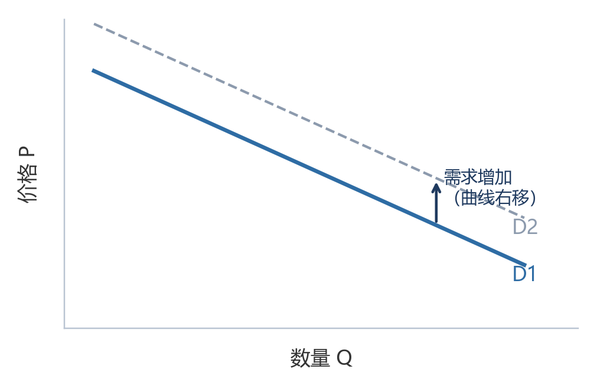
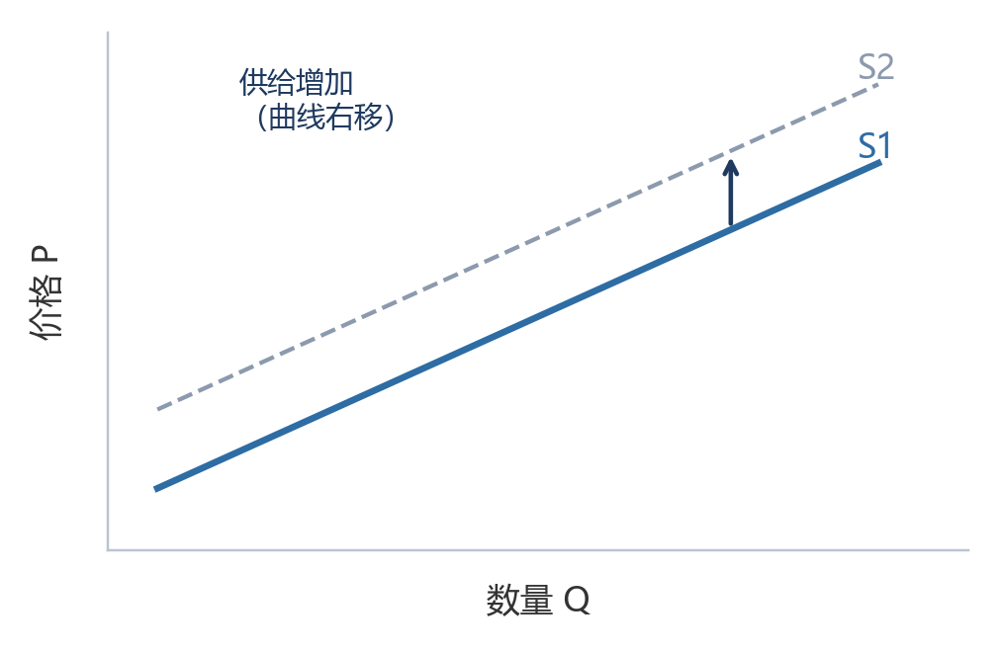
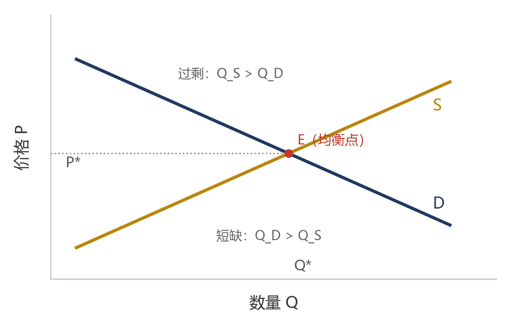

T O U R I S M E C O N O M I C S
旅游经济学
课 程 笔 记 · 全 面 版
依 据 | 课件第 1—8 章 · 课堂笔记 · 作业与讨论 · 时政要点 |
框 架 | 八章体系 · 全知识点覆盖 · 概念—机制—应用三级递进 |
特 色 | 核心考点提炼 · 易混概念辨析 · 六处校勘标注 |
用 途 | 课程复习 · 考前速查 · 知识体系重建 |
2026 年 11 月
整 理 说 明
一、资料依据
本笔记依据课程文件夹中的全部材料整理：
- 《旅游经济学第1—8章》课件（第一章至第八章，含概念、分类、机制与案例）。
- 《旅游经济学知识点梳理》课堂笔记（含课件图表截图，本笔记据此补全图示与结构）。
- 《经济学时政要点、作业、讨论总结》（含课堂讨论题、时政材料与答题要点）。
- 第4—7章作业、作业2与期中作业（用于核对课堂重点与常见易错点）。
二、整理原则
- 忠于原始资料：概念、分类与结论以课件与笔记的原始表述为准，不改变原意、不增删要点。
- 体系化重组：按“章—节—目”三级结构重排零散笔记，补足逻辑连接，使前后章节能相互印证。
- 不臆造：课件未给出公式或释义的地方，只作明确标注的“含义提示”，不擅自补写计算式。
- 有据可查：确需修改的表述逐条列入附录E，写明原文、处理方式、理由与依据。
三、标注体系
标识 | 含义 | 使用方式 |
|---|---|---|
核 心 考 点 | 本章必须掌握的概念、分类、结论 | 置于每章末尾，便于自测 |
校 勘 | 对原文表述问题的修正 | 随文标注编号，附录E汇总 |
补 充 说 明 | 课件未展开、但理解所需的中性提示 | 不改变课程原始结论 |
口 诀 | 记忆提示 | 以浅色引文块呈现 |
四、使用建议
- 第一遍通读：先看每章导语与“核心考点”，建立框架；
- 第二遍精读：重点掌握加粗的概念、分类标准与因果关系；
- 第三遍自测：用附录B名词速查、附录C易混辨析、附录D答题要点进行闭卷回忆；
- 考前速查：直接查阅附录A的知识结构总览，按“章—核心问题—关键词”串联。
目 录
目录由 Word 自动生成，页码与标题以正文为准。
CHAPTER 01
第一章 绪论
本章回答三个前置问题：旅游经济学研究什么、用什么方法研究、旅游经济自身有何特殊性质。理解“服务经济”与“服务主导逻辑”，是把握全书分析视角的钥匙。
第一节 旅游经济学的基本问题
一、旅游经济学的框架
1. 性质。旅游经济学是以马克思主义立场、观点、方法为指导，运用经济学的基本原理和分析手段，研究旅游经济活动各领域的理论、机制和规律的学科。其任务在于揭示旅游经济运行中资源配置的运行规律和经济关系，指导旅游经济实践活动，提高生产效率，解决旅游经济活动中的现实问题。
从学科定位看，它属于应用经济学：以经济学的一般理论为“骨架”，以旅游经济活动为“对象”，既解释旅游供求、价格、消费、投资等微观机制，也分析产业关联、区域布局与战略政策等中观、宏观问题。
2. 主题。旅游经济学围绕“稀缺资源的配置”展开，可拆解为四个递进环节：
环节 | 内涵 | 关键表述 |
|---|---|---|
稀缺 | 相对于需求，旅游及社会资源是有限的 | 资源配置的起点与约束条件 |
效率 | 有效利用和配置有限的旅游及社会资源，满足人们的需要 | 以最小投入获得合意产出 |
目标 | 在稀缺资源和给定技术等约束条件下，生产最多数量、最优质量的产品和服务 | 数量与质量的统一 |
衡量 | 帕累托最优：不使其他人境况变坏的前提下，不再有增进任何人经济福利的改进空间 | 力求公平与效率的统一 |
帕累托最优是效率的评价标准，而非唯一的社会目标；旅游经济还需兼顾公平、安全、文化与生态等价值。
3. 基本问题。经济学三大基本问题在旅游经济中的具体化：
- 生产什么、生产多少、何时生产？取决于消费者偏好、资源和技术可能性；旅游产品的季节性与资源约束使“何时生产”尤为突出。
- 如何生产、谁来生产、用什么资源和技术？取决于生产者之间的竞争；旅游服务大量依赖人力资本与目的地资源组合。
- 为谁生产、谁来享用、如何分配？取决于要素市场的供求，即要素的数量和价格；涉及客源结构、收益分配与社区共享。
- 制度答案：有效市场与有为政府相结合，政府、市场、社会相协同。
4. 内容体系。全书共八章，形成“总论—微观机制—产业组织—宏观战略”的递进结构：
篇块 | 章目 | 核心议题 |
|---|---|---|
总论 | 第一章 绪论 | 学科性质、基本原理、旅游经济特征与地位 |
微观机制 | 第二章 旅游供求与价格 | 需求、供给、均衡、价格形成与监管 |
微观机制 | 第三章 旅游产品与市场 | 产品构成与属性、市场竞争类型与市场细分 |
微观机制 | 第四章 旅游消费与投资 | 消费决策、消费结构、投资决策 |
宏观分配 | 第五章 旅游收入与分配 | 收入分类与衡量、三次分配 |
产业组织 | 第六章 旅游企业行为与绩效 | 企业性质与边界、并购与定价、绩效评价 |
产业结构 | 第七章 旅游产业关联与布局 | 产业体系优化、关联融合、布局与集聚 |
宏观战略 | 第八章 旅游发展战略与政策 | 战略内容与模式、产业政策与公共政策 |
二、旅游经济学的基本原理
1. 分析结构。任何旅游经济现象都可放在两组基本关系中考察：
- 生产力与生产关系：谁在生产、用什么生产、生产成果如何分配；对应旅游目的地、旅游企业与从业者之间的关系。
- 经济基础与上层建筑：产业政策、法律法规、文化观念如何反过来塑造旅游经济运行。
2. 决策原理。经济学的四项决策原理，是分析旅游者、企业与政府行为的共同工具：
原理 | 基本含义 | 在旅游经济中的体现 |
|---|---|---|
权衡取舍 | 多目标决策；效率与公平的取舍 | 开发与保护、旺季扩容与体验质量、门票收入与公共可达性 |
机会成本 | 多方案成本收益比较 | 选择甲目的地即放弃乙目的地；资源用于旅游即放弃其他用途 |
边际变动 | 边际收益与边际成本的比较 | 增加一名游客的边际收入与边际成本；景区承载量的边际拥挤成本 |
激励反应 | 成本收益关系；供需与价格信号 | 价格、税收、补贴改变旅游者与企业的行为 |
3. 运行原理。从四个层面理解旅游经济的运行：
- 贸易效果：分工与专业化、竞争与合作、服务贸易。
- 生产能力：生产率与生活水平、技术进步和人力资本投资。
- 市场机制：微观主体分散决策、市场均衡。
- 政府作用：市场失灵、外部性和公共品、公平与社会福利。
第二节 旅游经济的基本问题
一、旅游经济的特征
1. 涵义。旅游经济是旅游者与经营者基于旅游活动、围绕旅游产品（服务）而展开的旅游供求矛盾运动。它既包括旅游者的消费活动，也包括旅游经营者的生产与交换活动，核心是供求双方在旅游市场上的相互作用。
2. 性质：构成庞杂。旅游经济并非单一行业，而是多个异质部门的集合：
- 要素密集度混杂：劳动密集（餐饮）＋资金技术密集（航空）＋知识密集（创意）。
- 市场结构混杂：完全竞争（商业、餐饮、演艺）＋自然垄断（遗产）。
- 功能属性混杂：大量部门超出纯经济意义（文化、生态、教育、乡村），更强调社会性。
3. 属性差异：旅游经济本质上是服务经济。
比较维度 | 传统服务业 | 现代服务业 |
|---|---|---|
产生时序 | 早于现代制造业而存在和发展 | 随现代制造业出现及人们生活方式变化而发展 |
典型特征 | 结果无形；生产与消费同步；不可储存；不同于货物贸易（无法一地生产、另一地消费）；所有权不能完全让渡 | 技术含量高、规模经济显著、劳动生产率提高快；信息技术使传统服务业态的特征发生变化 |
经济学意义 | 缺乏规模经济；技术含量不高；劳动生产率提高缓慢 | 规模经济与专业化分工显著，技术进步成为增长主引擎 |
所有权问题 | 商品交易的是所有权；旅游服务是人力资本从事经济活动的过程，不存在所有权交易，只让渡人力资本使用权；旅游资源所有权更无法让渡 | 服务过程仍不可储存，但借助平台与数据可实现部分分离与复用 |
传统服务业“缺乏规模经济”的原因，除结果无形、生产消费同步、不可储存之外，还包括需求高度个性化：批量、标准化、劳动分工等规模经济的基本要求难以满足；加之多数传统服务是直接的劳务活动，机器难以普遍应用，技术进步缓慢，劳动生产率提高因而受到双重制约。
校勘 01 · 笔记归类调整 原笔记把“需求高度个性化”列为传统服务业的“特征”。课件第12页的特征清单为：结果无形、生产消费同步、不可储存、不同于货物贸易、所有权不能完全让渡；第13页才在解释“缺乏规模经济”时提出“上述特点加上需求高度个性化”。据此将其移入规模经济的成因分析，避免把“成因”与“特征”并列。依据：课件第12—13页。 |
4. 目标多元。旅游经济覆盖范围跨越经济和社会领域，相当一部分处在社会事业领域；随着收入水平提高和消费结构变化，更多消费者愿意以个人支付的方式增加文旅等服务消费；由此形成经济功能与非经济功能的结合，评价标准不能只看产值与利润。
5. 逻辑：从商品主导逻辑到服务主导逻辑。
比较维度 | 商品主导逻辑（G-D logic） | 服务主导逻辑（S-D logic） |
|---|---|---|
中心 | 商品等产出置于交易的中心 | 顾客需求与使用价值置于中心 |
理论渊源 | 斯密：有形商品易于贸易，利于快速积累资本；服务不易贸易，强调商品交换的财富积累效应 | 超越“商品—服务”二分，关注行为、流程与能力运用 |
流转过程 | 沿供应链经多个环节到达消费者（consumer），最终被消费掉，原有使用价值消失 | 服务提供者直接面向顾客（customer），服务体验是价值创造而非价值消失 |
核心资源 | 对象性资源（operand）：有形、静态、有限 | 操作性资源（operant）：知识、技能，无形、动态、无限 |
价值来源 | 交换价值，由生产者创造后传递给消费者 | 使用价值，由多方资源整合、通过服务交换实现价值共创 |
服务的涵义。服务是某参与者通过行为、流程、履行，运用专业能力或操作性资源（operant resource），实现其他参与者或其本身效益的过程；通俗地说，服务就是“做一些有益事情的想法”（the notion of doing something beneficial）。它不同于商品主导逻辑中的“服务”，是超越商品与服务的概念。
主要观点。
- 底层逻辑转向人类福祉，而非生存问题；关注焦点从商品转移至顾客需求，天然具备顾客导向属性。
- 价值共创是一群参与者之间的交互；使用价值通过整合多方资源而创造，资源整合通过交换实现，服务交换是价值共创的手段。
- 需求层次上移：在有形的功能性利益之外，更重视安全感、幸福感、成就感等主观使用价值与情感等高阶需求。
- 操作性资源成为最核心要素：与对象性资源相比，操作性资源通常无形、动态、无限，充当发掘对象性资源价值的角色。
二、旅游经济的地位
旅游经济在国民经济中的地位，由两种效应支撑，并在四个维度上表现。
（一）成因。
- 乘数效应：由于国民经济各部门的相互联系，旅游最终需求的变动将引起整个经济中产出、收入、就业等的相应变动。
- 溢出效应：一个经济主体的行为对另一个经济主体的福利所产生的外部影响，这种影响并未从市场交易或价格中反映出来。
（二）表现。
维度 | 主要表现 |
|---|---|
产业经济 | 带动交通、住宿、餐饮、商业、文化等相关产业，扩大就业与收入，形成乘数效应 |
社会文化 | 促进文化交流与文化遗产活化，塑造目的地形象，增强社区认同 |
生态环境 | 生态资源是吸引物的基础，保护与开发并存；负外部性需要通过规制与治理内部化 |
地域空间 | 重塑区域经济格局，推动城乡融合与区域协调发展，形成集聚与扩散并存的格局 |
核心考点 ▪ 旅游经济学的定义、任务与学科性质；稀缺—效率—目标—帕累托最优四环节。 ▪ 三大基本问题及其在旅游经济中的具体化；“有效市场＋有为政府”。 ▪ 旅游经济构成庞杂的三重表现；传统服务业与现代服务业的属性差异。 ▪ 服务主导逻辑的服务的定义与四条主要观点（高频论述题）。 ▪ 旅游经济地位的成因：乘数效应与溢出效应。 |
CHAPTER 02
第二章 旅游供求与价格
本章是全书微观分析的基础：由需求、供给两条曲线推出均衡，再由均衡解释旅游价格的形成与监管。掌握“曲线移动”与“沿曲线移动”的区别，是全部弹性与均衡分析的前提。
第一节 旅游供求
一、旅游需求
（一）市场与供求模型的基本概念。
概念 | 含义 |
|---|---|
市场 | 买方和卖方的集合，通过实际的或潜在的相互作用决定商品价格；具有主体、地理与产品的边界 |
市场界定 | 确定一个具体市场应包括哪些买方和卖方，包括地理边界和产品边界；日用消费品市场高度本地化，旅游市场例外 |
竞争性市场 | 对某种商品存在很多买方和卖方，任何买方或卖方对价格均不具有显著影响力 |
市场价格 | 建立在买方与卖方相互作用基础上；完全竞争市场由单一价格主导，不完全竞争市场存在差别定价，此时市场价格指平均价格 |
实际价格 | 比较不同时期价格时，采用扣除通货膨胀因素的实际价格（常用CPI等总体价格指数测定），而非名义价格 |
（二）旅游需求的涵义。
概念：具有一定支付能力的消费者，为满足其旅游休闲欲望，愿意在一定时间和价格条件下所购买的旅游产品的数量。注意“有支付能力”与“愿意购买”两个限定：只有需要而无支付能力，或只有支付能力而无出游意愿，都不构成有效旅游需求。
特征：多主题、多层次、综合性、动态性。
产生条件：主观条件是需要与动机；客观条件是收入、闲暇与技术。二者缺一不可。
影响因素：可从微观与宏观、个体与群体、PEST（政治、经济、社会、技术）等不同层面展开（教材第64—65页有系统归纳）。
（三）需求曲线与需求规律。
需求曲线表示任一给定价格上，旅游者愿意购买的旅游产品数量。需求规律：其他条件不变时，价格下降则需求数量上升，反之成立。
分析需求变化必须区分两种情形：
比较项 | 需求量变动（沿曲线移动） | 需求变动（曲线移动） |
|---|---|---|
含义 | 价格变化导致需求数量的变化 | 任一给定价格上，需求数量都发生变化；即使价格不变，需求也可能上升或下降 |
成因 | 商品自身价格变化 | 价格以外的因素变化 |
图形 | 沿同一条需求曲线上下移动 | 整条曲线右移（需求增加）或左移（需求减少） |
术语 | 需求量增加／减少 | 需求增加（右移，任一价格下需求量都更大）／需求减少（左移，任一价格下需求量都更小） |
需求规律中的“其他条件不变”，实质就是“使需求曲线移动的因素不变”。使需求曲线移动的因素主要有四类：
- A. 相关产品价格变化：替代品价格下降，原商品需求减少、曲线左移（两者功用相似）；互补品价格下降，原商品需求增加、曲线右移（一起消费使总成本下降）。
- B. 收入或闲暇变化：收入、闲暇上升，大多数商品需求增加；劣等品是例外。
- C. 偏好变化：消费时尚、潮流、观念、文化改变偏好与品位。
- D. 预期变化：预期价格、收入等在未来会变化，从而影响当下需求。

图2-1 需求变动：需求曲线右移（价格不变，需求量增加）
（四）旅游需求弹性。弹性（elasticity）衡量敏感性：A发生1%的变化将引起B变化的百分比。
弹性类型 | 表达式 | 符号 | 经济含义 |
|---|---|---|---|
需求的价格弹性 Ep | Ep =（ΔQ/Q）÷（ΔP/P） | 通常为负 | 价格上升1%时需求量变化的百分比；|Ep|>1富于弹性，|Ep|<1缺乏弹性 |
需求的收入弹性 Ei | Ei =（ΔQ/Q）÷（ΔI/I） | 通常为正 | 收入上升1%时需求量变化的百分比；劣等品为负 |
需求的交叉价格弹性 Exy | Exy =（ΔQx/Qx）÷（ΔPy/Py） | 替代品为正，互补品为负 | A的需求量受B价格影响的程度 |
需求价格弹性的大小，取决于原商品的性质及替代品的供给。两种极端情形：完全弹性（价格任何上涨需求即为零，任何下跌需求无限，曲线水平）；完全无弹性（需求量固定，曲线垂直）。
二、旅游供给
（一）涵义。旅游供给是在一定时期和价格水平下，旅游经营者愿意并能够向旅游市场提供的旅游产品的数量。“愿意”与“能够”同样缺一不可：有供给意愿而无供给能力，或有能力而无供给意愿，都不形成有效供给。
特征：服务性、异质性、异地性、关联性。影响因素：可从微观与宏观、企业与区域、PEST等层面展开。
（二）供给曲线与供给规律。供给曲线表示任一给定价格上，经营者愿意出售的旅游产品数量。供给规律：其他条件不变时，价格上升则供给数量上升，反之成立。
与需求相同，供给也有“供给量变动”（沿曲线移动，由自身价格引起）与“供给变动”（曲线移动，由价格以外因素引起）之分；供给增加指曲线右移，任一价格下供给量都更大；供给减少指曲线左移。
使供给曲线移动的因素主要有三类：
- A. 投入品价格变化：投入品价格上升，最终产品成本上升，曲线左移。
- B. 技术变化：技术是把投入品转化为最终产品的一整套流程和方法，并非专指“高技术”；技术进步使成本下降，曲线右移。
- C. 预期变化：预期价格等在未来会变化，影响当下供给。

图2-2 供给变动：供给曲线右移（价格不变，供给量增加）
（三）旅游供给弹性。供给的价格弹性通常为正；供给的交叉价格弹性指A的供给量受B价格的影响，例如投入品价格上升，A的供给量下降，交叉弹性为负。
三、旅游供求关系
（一）基本原理。旅游供求分析沿用了第一章的经济学框架：生产力与生产关系、经济基础与上层建筑的结构判断；权衡取舍、机会成本、边际变动、激励反应的决策原理；以及贸易效果、生产能力、市场机制、政府作用的运行原理。供求均衡正是“市场机制”原理最直接的表达。
（二）市场均衡的涵义。竞争性市场的均衡，指价格达到使商品需求量等于供给量的水平。此时的价格即均衡价格，也叫市场出清价格：每个在此价格上愿意买的人都能找到按同样价格卖的人，反之亦然，市场出清。在此价格上买卖的商品数量即均衡数量。在该价格上，没有任何卖方或买方能通过增减供给量或需求量来改善境遇。
（三）均衡的达成。将需求曲线与供给曲线置于同一坐标系，两线交点即均衡点，对应均衡价格与均衡数量。在任何其他价格上市场都不出清：价格高于均衡价格时，供给量大于需求量，出现过剩（无人买）；价格低于均衡价格时，需求量大于供给量，出现短缺（抢着买）。
市场机制：在竞争性市场中，价格会不断变化直到市场出清为止的趋势性作用机制。市场倾向于形成单一价格——市场价格高于均衡水平就会下降，低于均衡水平就会上升；价格总是朝均衡价格移动，在均衡点上既无过剩也无短缺，因而不再存在使价格进一步变化的压力。供给与需求并非总是处于均衡，但市场总的趋势是可以出清的。

图2-3 竞争性市场的均衡：过剩与短缺都会推动价格回归均衡
（四）均衡的变动。
1. 需求变动后的新均衡。设E1为初始均衡点。若替代品价格上升，原商品需求增加、需求曲线右移，市场不再均衡；在原均衡价格P1上出现短缺，价格与供给数量上升，沿供给曲线上移，在E2达到新均衡，均衡价格与均衡数量都高于原来。一般结论：需求增加导致均衡价格、均衡数量都上升；需求减少导致两者都下降。
2. 供给变动后的新均衡。若技术进步使供给增加、曲线右移，在原价格P1上出现过剩，价格下降、需求数量上升，沿需求曲线下移；新均衡的均衡价格低于原来、均衡数量高于原来。一般结论：供给增加导致均衡价格下降、均衡数量上升；供给减少则相反。
3. 需求与供给同时变动。两条曲线反向移动时，均衡价格可预测，均衡数量不确定；同向移动时，均衡数量可预测，均衡价格不确定。具体方向取决于两项变动的相对幅度。
变动情形 | 均衡价格 | 均衡数量 |
|---|---|---|
需求增加、供给不变 | 上升 | 上升 |
需求减少、供给不变 | 下降 | 下降 |
供给增加、需求不变 | 下降 | 上升 |
供给减少、需求不变 | 上升 | 下降 |
需求增加＋供给减少（反向） | 上升（可预测） | 不确定：需求增幅大则上升，供给减幅大则下降 |
需求减少＋供给增加（反向） | 下降（可预测） | 不确定：需求减幅大则下降，供给增幅大则上升 |
需求增加＋供给增加（同向） | 不确定：需求增幅大则上升，供给增幅大则下降 | 上升（可预测） |
需求减少＋供给减少（同向） | 不确定：需求减幅大则下降，供给减幅大则上升 | 下降（可预测） |
记忆要点：反向移动——“价格定、数量不定”；同向移动——“数量定、价格不定”。幅度比较决定不确定项的方向。
校勘 02 · 结论补全 课件第39页以“作业”形式留空，要求自行判断同向移动时均衡价格的方向。本笔记按“幅度比较”逻辑补全为：需求、供给同向增加时均衡数量必定上升，均衡价格取决于两项增幅孰大；同向减少时均衡数量必定下降，价格取决于两项减幅孰大。依据：课件第37—39页“需求/供给单独变动”结论的叠加原理。 |
第二节 旅游价格
一、旅游价格的特征
概念：旅游者为满足旅游需要所购买的旅游产品的价格，是旅游产品价值的货币表现形式，是旅游产品价值、旅游市场供求等的综合反映。
构成：从产品形态看，分为单项产品价格与线路组合价格；从价值构成看，包括成本与利润。
特点：
- 综合性：旅游产品由食、住、行、游、购、娱等多部门产品组合而成，价格是多部门成本与价值的综合体现。
- 复杂性：构成要素多、季节与渠道差异大，同一产品在不同时间、不同渠道可能对应不同价格。
- 波动性：受需求季节性、突发事件、汇率与政策等因素影响，价格起伏明显。
- 垄断性：稀缺且不可替代的旅游资源（如遗产、独特景观）形成自然垄断或资源垄断，使相关产品价格具有垄断色彩。
二、旅游价格的形成
（一）形成机制。四个层次共同决定旅游价格：
- 价值是旅游产品价格形成的基础：价格最终由凝结在产品中的价值决定。
- 市场供求关系决定旅游产品的现实价格：供求对比使价格围绕价值波动。
- 市场竞争状况决定旅游产品的成交价格：竞争越充分，企业定价权越小；垄断越强，定价权越大。
- 政府的经济政策调节旅游产品的成交价格：通过指导价、定价目录、补贴与税收等工具调节。
（二）制定策略。
类别 | 具体类型 | 要点 |
|---|---|---|
定价目标 | 利润目标 | 最大化利润、满意利润、平均利润、投资回收利润 |
竞争目标 | 市场份额、市场稳定、竞争应对、生存维持 | |
产品目标 | 质价相符、品质领先、垄断产品 | |
定价方法 | 成本导向 | 成本加成、目标收益、盈亏平衡（保本定价）、变动成本（边际贡献定价） |
需求导向 | 价值理解、需求区分（按不同时间、地点、收入区分需求） | |
竞争导向 | 率先定价、跟随定价 |
（三）价格监管。
价格管理分三种形式：市场调节价（由经营者自主制定，通过市场竞争形成）、政府指导价（政府规定基准价及浮动幅度）、政府定价（由政府直接制定）。价格监督主体包括政府、社会与企业三方。
定价的策略包括心理定价、折扣定价与招徕定价。
补充说明 课件仅列出三类策略名称，未展开释义。为避免遗漏，此处按通行含义作简要提示：心理定价利用顾客心理预期（尾数、整数、声望等）；折扣定价以数量、季节、现金、功能等折扣调节成交价；招徕定价以特价产品吸引客流、带动其他消费。具体内容以教材与课堂讲解为准。 |
核心考点 ▪ 需求量变动与需求变动的区别（沿曲线 vs 整条曲线）。 ▪ 需求价格弹性、收入弹性、交叉弹性的符号与判断；两种极端情形。 ▪ 均衡价格、市场出清、均衡数量；过剩与短缺的调整方向。 ▪ 供求同时变动时“反向动价格定、同向动数量定”的结论及幅度比较。 ▪ 旅游价格的四个特点、四条形成机制、三类定价目标与三类定价方法。 ▪ 价格管理的三种形式与价格监督的三类主体。 |
CHAPTER 03
第三章 旅游产品与市场
本章把“产品”与“市场”连接起来：先界定旅游产品的价值与构成，再以SCP框架分析市场竞争类型与竞争策略，最后落到市场细分。
第一节 旅游产品
一、旅游产品的构成
（一）概念。旅游产品是指旅游市场上，由旅游经营者向旅游者提供的，满足其旅游活动所需的各种物品和服务的总和。它既包含有形物品，也包含劳务与体验，是“物品＋服务”的组合。
（二）价值。
使用价值具有四个特点：
- 综合性：一次旅游消费同时使用交通、住宿、餐饮、景观、服务等多种产品。
- 多维度：分为基本部分（必不可少）与附属延伸部分（可有可无）。
- 多层次、多效用性：同一产品可满足观光、休闲、社交、自我实现等不同层次需要。
- 对游客而言具有暂时性：使用价值在消费过程中实现，不能永久占有。
价值可从三个角度把握：
- 成本构成：固定成本与变动成本。固定成本又分约束性（“不得不花”）与酌量性（可通过有效分摊、投入权重调整而灵活安排）；变动成本随业务量变化。
- 资本构成：物质资本与人力资本，后者在旅游服务中尤为关键。
- 时间维度：价值存量与价值增量，前者是既有资源与能力的沉淀，后者是持续投资与创新带来的增值。
（三）构成。
划分视角 | 构成 | 说明 |
|---|---|---|
一般构成 | 核心部分、形式部分、延伸部分 | 核心满足基本需要；形式体现质量、价格、品牌、包装等外在形态；延伸提供附加利益与保障 |
需求构成 | 基本旅游产品、非基本旅游产品 | 按需求刚性程度划分，前者为必需消费，后者为弹性消费 |
供给构成 | 旅游资源、旅游服务、旅游设施、旅游商品、旅游通达性 | 资源是基础吸引物，服务是核心，设施是依托，商品是延伸，通达性是条件 |
二、旅游产品的特征
（一）服务属性。旅游产品具有综合性、结果无形、生产与消费同步、不可储存、不可转移、不便贸易、所有权不能完全让渡等特征，并由此衍生出依赖性与脆弱性：一方面依赖目的地资源、基础设施与社会环境，另一方面易受突发事件、季节与政策冲击。
（二）公共品属性。理解这一点需先掌握两组概念：
外部性（externality）：一个人或企业的活动对其他人或企业的外部影响，这种影响并不是在有关各方以价格为基础的交换中发生的；生产或消费对他人产生附带的成本或收益，却未为此付出代价或获得报酬。正外部性产生额外效益，负外部性产生额外成本；按主体分为生产外部性与消费外部性，按时空分为空间外部性与时间外部性。
公共品（public goods）：具有极端正外部性的特殊产品，生产出来后正外部性非常大，人们只享受其效用即可，无需也不愿付费。私人品具有竞争性与排他性，可通过市场实现资源优化配置；公共品具有非竞争性与非排他性，不能依靠市场力量实现有效配置。
- 非竞争性：对于任一给定产出水平，增加额外消费不会引起成本任何增加，即边际成本趋于0。
- 非排他性：提供给全体社会成员，不论是否支付价格，任何人都可使用并从中得益；一旦生产出来，即允许公众消费。
- 后果：收费困难、免费搭车，生产者收益难以保证，不适宜由私人生产，出现市场失灵。
因此，旅游产品“具有一定的公共品属性”，但不是纯公共品。
校勘 03 · 概念精确化 原笔记与期中作业以“国家公园通常对公众免费开放”说明非排他性，这一举例并不严谨：我国国家公园普遍实行门票或预约制，门票本身就是排他手段。更准确的表述是：旅游产品多为准公共品（俱乐部产品），非竞争性与非排他性只在容量范围内成立；严格意义的纯公共品是免费开放的城市公园、公共海滨、公共游憩空间等。依据：课件第51页公共品定义及“一定”的限定语。 |
三、旅游产品的开发
（一）一般策略。
- 市场导向：以游客需求与市场细分为起点，而非以资源禀赋为唯一依据。
- 综合效益：兼顾经济、社会、文化与生态效益。
- 动态迭代：沿“资源→吸引物→服务→环境→数智化”持续升级。
- 可持续发展：在承载能力范围内开发，保护资源本底。
（二）生命周期策略。旅游产品在不同生命周期阶段应采取不同策略：产品改进、市场开拓、营销组合、升级迭代。生命周期并非宿命，通过产品创新、市场重构与体验升级，可以延长成熟期、延缓衰退。
第二节 旅游市场
一、旅游市场竞争
（一）旅游市场的概念。
广义：在旅游产品交换过程中所反映的各种经济行为和经济关系的总和。
狭义：即旅游客源市场，是在一定时期内某一地区中存在的、对旅游产品具有支付能力的现实的和潜在的购买者。
特点：异地性、多样性、波动性、季节性、全球性。
（二）分析框架。产业经济视角（产业—企业）对旅游市场的分析不同于营销管理视角（企业—顾客）。产业组织理论将产业分解成特定市场，沿“需求—供给”→“结构—行为—绩效”→“产业—公共政策”的线索，建立SCP（Structure-Conduct-Performance）分析框架。SCP框架以市场结构为分析重点，重视结构对行为和绩效的作用，即结构决定行为、行为决定绩效；为获得理想绩效，需通过公共政策调整和改善不合理的市场结构。
要素 | 内涵 | 评价维度 |
|---|---|---|
市场结构 | 特定市场内的竞争结构，即各市场主体之间的竞争关系 | 影响价格水平及稳定性、资源配置效率、技术进步与市场营利性 |
市场行为 | 企业在市场供求条件下采取的各种决策行为 | 价格行为与非价格行为（产品决策、广告、研发、应对竞争对手） |
市场绩效 | 一定市场结构与市场行为条件下市场运行的最终经济效果 | 资源配置效率、利润率、技术进步状况、产品质量水准 |
（三）划分依据。
- 企业数量及相对规模：市场集中度（卖方）反映企业数量及相对份额（市场占有率），是划分市场结构的首要因素；其影响因素包括规模经济、市场容量、进入壁垒、横向兼并、政策法规。
- 产品差别化：产品替代程度决定企业是价格接受者还是制定者；质量、款式、顾客偏好、销售服务、信息提供等方面的差异，是对抗竞争的主要非价格壁垒。
- 经营决策能力：企业相对规模与市场份额影响其独立决策程度，即企业间不进行合谋或互动的程度；合谋程度受相对规模、预期、多市场互动等影响。
- 进入与退出壁垒：反映已有企业优势与新企业障碍，以及竞争强度的潜在性、动态性。进入壁垒源于规模经济、必要资本量、稀缺资源占有、产品差别、政策法规；退出壁垒源于资本投入、退出处置、政策法规。
（四）主要类型。
类型 | 核心特征 | 价格影响力 |
|---|---|---|
完全竞争 | 企业众多、进出自由、产品同质、完全信息；市场价格外生给定，企业是价格接受者，长期趋于零利润 | 无 |
完全垄断 | 整个市场只有一个企业；无替代品、进入壁垒高；成因包括政府特许、自然垄断、生产资源控制 | 极强 |
垄断竞争 | 企业众多、进出容易、产品有差别；兼具竞争与垄断因素，产品差别越大垄断程度越高，大量相似产品又互为替代品 | 有限 |
寡头垄断 | 少数几个企业，对价格和产量有很大影响；相互制约、进出障碍、差别各异（纯粹寡头／差别寡头） | 很强 |
旅游市场总体属于垄断竞争类型。旅游企业数量多、进出相对容易，但产品与服务在品牌、主题、区位、体验上存在明显差别，使企业对自身价格具有一定垄断力；同时大量相似产品互为替代品，竞争依然激烈。
（五）竞争策略。
基本策略：集中策略、差别策略、互动策略、壁垒策略。
具体措施：价格竞争措施；非价格竞争措施包括高质量、新产品、专营化。关键环节：市场细分。
二、旅游市场细分
（一）细分标准。
细分标准 | 主要变量 |
|---|---|
地理细分 | 地区、距离、城乡等 |
人口细分 | 性别、年龄、生命周期阶段、文化程度、职业、收入等 |
心理细分 | 生活方式、性格特征等 |
行为细分 | 出游时机、所追求的利益、消费经历、消费水平、消费频率等 |
（二）细分市场的选择策略。
策略 | 基本思路 | 适用情形 |
|---|---|---|
无差异 | 大众化、标准化，以同一产品覆盖整体市场 | 需求同质、规模经济显著 |
差异性 | 大市场、全谱系，针对多个细分市场设计不同产品 | 资源与能力较强、追求市场份额 |
密集性 | 小市场、大份额，集中资源深耕一个细分市场 | 资源有限、细分市场容量足够 |
精准性 | 本地化、定制化，面向特定人群提供个性化产品 | 数据与渠道能力强、需求高度个性化 |
核心考点 ▪ 旅游产品的概念、使用价值的四个特点、价值的三个角度。 ▪ 旅游产品的三种构成（一般／需求／供给）。 ▪ 服务属性与公共品属性：外部性、公共品的两大特征与市场失灵（准公共品的辨析）。 ▪ SCP框架与市场结构的四项划分依据。 ▪ 四种市场类型的特征，以及“旅游市场总体属垄断竞争”的判断理由。 ▪ 市场竞争的四项基本策略、市场细分的四类标准与四种选择策略。 |
CHAPTER 04
第四章 旅游消费与投资
本章从需求侧深入旅游者决策：以效用、偏好与预算约束解释“买什么”，以消费结构解释“买多少、怎样构成”；再从供给侧讨论旅游投资的分类与决策程序。
第一节 旅游消费
一、旅游消费的特征
涵义。旅游消费是满足需要的过程，即为满足欲望而使用产品的经济行为。
- 动态意义：支付货币购买旅游产品以满足自身旅游需要的行为过程。
- 静态意义：在旅游过程中为满足需要而使用的物质与精神产品的总和。
本质：在既定预算（收入）约束下追求效用（偏好）最大化的资源配置过程。
角色：是一切经济活动的起点（动因）和终点（归宿）。
地位：顾客至上，消费者凭借市场机制决定生产什么、怎样生产、为谁生产、何时何地生产，是实现社会资源最优配置的前提。
特点：个体性、高层次、精神性、综合性、异质性。
二、旅游消费的影响因素
（一）消费者偏好。
效用（utility）指人们从消费某种旅游产品中感觉到的主观满足程度。其特点是主观评价：因人、因事、因地、因时而异，只能自我比较（intrapersonal），难以相互比较（interpersonal）——可以比较不同产品对同一个人的效用，无法比较同一产品对不同人的效用。
效用形式 | 含义 | 特点 |
|---|---|---|
基数效用 | 效用大小可用基数测量，以一定量的效用单位（util）表示 | 可加总、可比较大小 |
序数效用 | 效用大小难以用基数测量，只能排出偏好次序 | 以排序代替计量，是无差异曲线分析的基础 |
总效用TU是旅游者在一定时间内消费旅游产品（组合）而获得的效用总量；边际效用MU是每追加额外一个消费单位所带来的总效用的变化。为实现总效用最大化，旅游者必须考虑边际效用对总效用的作用：MU为正（好感）时TU递增；MU为0（无感）时TU最大；MU为负（反感）时TU递减。
边际效用递减规律：在一定时间内，消费一种产品的MU通常随消费量的增加而减少。消费量上升时，从额外一个单位产品所得到的额外满足下降；消费越多，越接近满足的临界点，额外消费将无助于满足的提高。其要点是：
- MU的大小与消费数量反向变动；MU的大小与欲望强弱同向变动。
- MU具有时间性，是特定时间内的效用。
- 在理性消费者的有效消费区间内，MU为正；超过饱和点后MU转负，理性消费者会在此前停止消费。
- MU是决定产品价值的主观标准：产品的需求价格不取决于总效用，而取决于边际效用——消费数量少，边际效用高，需求价格也高。
校勘 04 · 表述矛盾修正 课件第74页原文为“对于理性消费者，MU实际上永远为正”，与同页“MU为负时总效用递减”及第73页TU/MU关系自相矛盾。本笔记修正为“有效消费区间内MU为正；超过饱和点MU转负，理性消费者会在此前停止消费”。理由：边际效用递减规律必然导致MU穿越零点，理性消费者不会消费至负效用区间。依据：课件第73—74页。 |
无差异曲线（等效用线）表示能带给旅游者相同满足程度的所有产品组合。每条曲线代表某一既定的总效用，曲线上任意点的总效用相等；理论上存在无限多条曲线簇，离原点越远的效用越大。其三个特点：
- 斜率为负（边际替代率，即每增加一单位X而必须放弃的Y的数量），曲线向右下方倾斜。
- 凸向原点：X对Y的边际替代率（绝对值）随X增加而递减——X增加时MU递减，Y减少时MU递增，故每个X能替代的Y越来越少。
- 互不相交：同一组合不可能同时对应两个不同的总效用水平。
（二）预算约束。消费更多的产品通常要耗费额外资源，旅游者的选择必须考虑成本，而成本的基本衡量方式是机会成本，因此要在不同产品之间做出选择与组合。预算约束要求产品组合的成本不超过可自由支配收入或预算；消费可能性是给定收入（预算）与价格下能够承受的产品组合的集合。
预算线表示支出全部收入（预算）时可行的消费组合，改变消费组合即沿预算线上移或下移；其截距取决于收入（预算），收入变化使预算线整体向内或向外移动；其斜率反映机会成本即价格之比，价格变化时斜率改变、截距或变或不变。
（三）消费者选择。效用最大化，指在收入和价格给定的条件下，旅游者选择能使其获得满足最大化的商品组合：购买各种旅游产品的MU要与支付的货币量正相关，支付每一单位货币、购买每一单位产品所获得的MU应相等且最大。
效用最大化必须满足两个条件：①位于预算线上，即能承受该组合；②位于与预算线相切的、最高的无差异曲线上。切点处预算线斜率恰好等于无差异曲线斜率，边际效用等于边际成本，即 MUx/Px = MUy/Py。
三、旅游消费的结构
（一）概念与划分。旅游消费结构是旅游者在旅游过程中消费的各种类型旅游产品及相关消费资料的比例关系。其理论基础是需要层次理论（生理、安全、社交、尊重、自我实现）。
划分依据 | 类型 |
|---|---|
按旅游消费层次 | 生存消费、享受消费、发展消费 |
按旅游消费形态 | 物质消费、精神消费 |
按旅游消费内容 | 基本旅游消费、非基本旅游消费 |
按旅游消费资料 | 食、住、行、游、购、娱等 |
（二）影响因素。
微观层面：
- 个体：收入水平、产品价格、消费偏好、心理预期。
- 家庭：家庭规模、生命周期、家庭功能、家庭投资。
宏观层面：
- 消费水平：影响旅游消费结构的最基本因素，取决于经济发展水平及所处阶段。随收入和消费水平提高，不同产品的需求增长率不同，低收入弹性的消费占比下降、高收入弹性的消费占比上升，但这种趋势并非线性。
- 价格因素：各类支出的价格弹性不同，基本需求缺乏弹性、具有刚性；高层次需求富有弹性、对价格敏感。
- 金融市场：信贷机制放松预算约束，将即期预算约束变为跨时预算约束，把未来消费转化为现在消费。
- 人口年龄结构：不同年龄群体的需求与行为差异影响消费规模与结构，人口老龄化尤为关键。
- 社会消费习惯：基于传统文化形成的消费习俗、习惯与观念。
- 消费示范效应：高度信息化社会示范效应明显，地区之间、城乡之间均显著。
- 经济政策：产业、财税、劳动就业、收入分配等。
- 社会政策：社会福利、社会保障等。
（三）消费结构的演变。收入是影响居民家庭和个人消费的关键因素。较长时期内，反映旅游者效用最大化的消费结构会随收入水平变化而呈趋势性变化：随着收入增长，消费支出由较低收入弹性的产品移向较高收入弹性的产品。现实中，旅游者的选择可能因社会心理因素偏离效用最大化，但作为一种趋势，个人和家庭的旅游消费结构仍会随收入变化而转换。从宏观看，随收入水平提高，食物支出占比下降、服务支出占比上升。当收入达到一定水平后，旅游消费结构的高度化主要不表现为基本消费支出占比提高，而是表现为享受和发展型旅游消费需求与支出占比的提高。
第二节 旅游投资
一、旅游投资的特征
（一）概念。投资是为将来获得收益或避免风险而进行的资金投放活动，包括产业投资与证券投资，主要是前者；也是为了保证项目投产和生产经营活动正常进行而投放的资金，是投入的活劳动与物化劳动价值的总和，包括固定资产投资与流动资产投资，主要是前者。
旅游投资是在一定时期内，根据旅游业或旅游企业发展的需要，为获得收益而投放到某一旅游项目上的一定数量的资金。
（二）分类。
分类标准 | 类型 |
|---|---|
按投资对象的存在形态 | 实体投资（购买实质形态资产，含无形资产）、金融投资（购买金融资产，风险与收益相对更高） |
按投资回收周期 | 长期投资（一年以上）、短期投资（一年以内） |
按投资方向 | 对内投资（企业内部）、对外投资（企业外部） |
按投资在再生产中的作用 | 初创投资（原始资产）、后续投资（更新、追加、转移） |
按投资项目之间的关系 | 独立投资、互斥投资、互补投资 |
按投资时间 | 先决投资、后决投资 |
（三）特点。投资领域的广阔性、复杂性；投资周期的长期性；投资实施的连续性和波动性；投资收益的不确定性。
二、旅游投资的决策
（一）涵义与要件。决策是从多个为达到同一目标而可相互替代的行动方案中选择最优方案的过程。一个待决策的问题一般需具备四个条件：有明确的目标；知悉现在和将来面对的环境；有两个以上的可选择方案；了解不同条件下各方案的损益结果。
（二）分类与特点。
决策类型 | 决策条件 | 方案与状态的关系 | 常用方法 |
|---|---|---|---|
确定型 | 条件和因素确定 | 一方案对应一状态 | 结构化决策法：事先制定规则、程序、方法、工具 |
风险型 | 条件和因素具有随机性 | 一方案对应多状态且概率已知 | 期望值决策法、决策树决策法 |
非确定型 | 条件和因素完全不确定 | 一方案对应多状态但概率未知 | 损益值小中取大、大中取大、后悔值大中取小 |
决策的特点包括过程性、目标性、可行性、选择性、满意性、动态性等。
（三）决策程序。
1. 目标识别。从愿景、利益相关者、使命到超额利润，构成一条逻辑链：
- 愿景（vision）：企业期望成为和实现什么样的图景，是未来的发展方向，反映企业的价值观与渴望，与内外环境紧密联系，借此吸引诸多利益相关者。
- 利益相关者（stakeholders）：能影响企业愿景和使命，同时受企业战略影响，并对企业经营业绩拥有可实施主张权的个人或群体。包括资本市场利益相关者（股东、主要资金供应者）、产品市场利益相关者（顾客、供应商、社区）、组织利益相关者（员工，含管理人员）。
- 使命（mission）：指明企业意图参与竞争的核心业务及所服务的顾客，直接涉及产品市场和顾客，其形成需要更多人参与。
- 关系：愿景是使命的基础，目标是使命的体现；都需要建立企业个性，都与利益相关者有关，都为战略选择和执行提供基础，都必然导致超额利润。
- 超额利润（above-average returns）：一项投资的利润超过投资者预期能从其他相同风险的投资项目所获得的利润。
2. 环境分析。环境在很大程度上定义了投资决策的选择范围，成功的决策必须与外部和内部环境吻合。
- 外部环境：趋势和变化→机会、威胁（OT）。包括一般环境（政策法规、经济、社会文化、技术等广泛因素）与具体环境（顾客、供应商、竞争者等直接影响因素）。
- 内部环境：资源和能力→核心竞争力→优势、劣势（SW）。包括有形与无形资产，无形资产的重点是品牌、声誉、组织文化等；不同的资源和能力使外部环境具有不同意义。
3. 方案拟定。对应三种投资战略：
战略类型 | 具体形式 | 适用情形 |
|---|---|---|
增长型 | 集中化；一体化（纵向：后向/输入、前向/输出；横向：并购竞争对手）；多元化（相关与非相关） | 持续提升竞争优势 |
稳定型 | 保持当前水平并充分酝酿选择 | 核心优势处于极限；行业处于变动期、外部力量快速变化、未来不确定；行业低（零）增长；小企业与初创企业目标有限 |
更新型 | 紧缩、扭转 | 重组业务、消除劣势 |
4. 方案评价。按决策类型选择方法：确定型用结构化决策法；风险型用期望值决策法、决策树决策法；非确定型用损益值“小中取大”“大中取大”，以及后悔值“大中取小”。
5. 方案选择。包括动态评估与调整，即在执行过程中根据环境变化反馈修正。
核心考点 ▪ 旅游消费的静态与动态含义、本质、角色、地位、五个特点。 ▪ 基数效用与序数效用；TU与MU的关系；边际效用递减规律及其要点。 ▪ 无差异曲线的三个特点；预算线的截距与斜率；效用最大化的两个条件与 MUx/Px = MUy/Py。 ▪ 旅游消费结构的四种划分与影响因素（微观、宏观）。 ▪ 旅游投资的六种分类、四个特点；决策的四个要件、三种类型与五个程序。 ▪ 愿景—利益相关者—使命—超额利润的逻辑链；三种投资战略与方案评价方法。 |
CHAPTER 05
第五章 旅游收入与分配
本章从“收入”与“分配”两个侧面衡量旅游经济运行的结果：先解决“收入有哪些、如何衡量、受什么影响”，再讨论市场、政府、社会三种分配机制及其效应。
第一节 旅游收入
一、旅游收入的分类
（一）概念。旅游收入是旅游目的地（国家或地区）在一定时期内向旅游者销售旅游产品和服务而获得的全部货币收入，即旅游目的地向旅游者提供旅游资源、设施、交通、劳务、商品等所换取的货币。
旅游收入是直接反映旅游经济运行状况、效果的关键性、综合性指标，是衡量旅游业发达程度的重要标志。
（二）类型。
1. 按旅游经营业务划分。
比较维度 | 国内旅游收入 | 国际（入境）旅游收入（旅游外汇收入） |
|---|---|---|
收入来源 | 目的地国家或地区经营国内旅游业务取得的本国货币收入，来源于本国居民境内旅游消费支出 | 经营国（境）外游客旅游业务取得的外国（境外）货币收入，来源于入境游客的旅游消费支出 |
价值性质 | 本国生产部门创造价值的转移 | 境外国民收入的流入和社会价值总量的增加 |
分配属性 | 属于国民收入再分配的范畴 | 总体属于国民收入初次分配的范畴 |
经济关系 | 体现国家与企业、企业与企业、企业与居民之间的经济关系 | 作为特殊形式的对外贸易，体现国际经济关系 |
2. 按旅游需求弹性划分。
比较维度 | 基本旅游收入 | 非基本旅游收入（边缘旅游收入） |
|---|---|---|
构成 | 吃、住、行、游等必需的基本旅游设施和旅游服务所获得的货币收入 | 非必需旅游产品和服务所获得的货币收入 |
需求弹性 | 价格弹性与收入弹性都较低 | 弹性较大，依收入水平、支付能力、需求层次、兴趣偏好灵活选择 |
稳定性 | 比较稳定，与游客人次、人均停留天数、人均天基本旅游消费支出正相关 | 不稳定 |
意义 | 反映旅游基本接待能力 | 在旅游收入总量中的比重可反映旅游业发展水平 |
3. 按旅游收入构成划分。商品性收入（向游客提供实物形式的商品而得到的货币收入）与劳务性收入（向游客提供各种劳务性服务而获得的收入）。
二、旅游收入的衡量
（一）总量指标。旅游总收入、旅游外汇总收入。
（二）水平指标。人均旅游（外汇）收入、人均天旅游收入，以及旅游换汇率、收汇率、创汇率。
口径提示 课件第102页仅列出“旅游换汇率、收汇率、创汇率”三项指标名称，未给出计算式。本笔记据此仅作含义提示：三者分别反映旅游外汇收入的换汇成本、收汇净额与创汇贡献。具体计算口径以教材与统计制度为准，不宜自行套用公式。 |
三、旅游收入的影响因素
- 需求弹性：需求曲线表示任一价格下旅游者愿意购买的数量；需求价格弹性衡量需求量对价格变化的敏感性，价格变化1%时需求量变化的百分比通常为负；|Ep|>1富于弹性、|Ep|<1缺乏弹性。弹性越大，价格与收入变动对旅游收入的影响越剧烈。
- 消费水平：游客人次、人均停留天数、人均天基本旅游消费支出等。
- 外汇汇率：本币贬值，以外币表示的旅游产品价格相对下降，有利于出口即入境旅游，能吸引更多国际（入境）游客，增加旅游外汇收入，提高旅游业在国际市场上的竞争力；但本币贬值、外币升值，也会导致以外币支付的设备、营销、管理等成本上升。本币升值则相反，以外币表示的价格相对上升，抑制入境旅游，减少旅游外汇收入。
- 通货膨胀：市场上货币（纸币）发行量超过流通中所需要的货币量，货币供给大于货币实际需求，超过产出供给，导致货币贬值、物价普遍持续上涨、购买力下降。这种情况不利于国内旅游，但可能推动出境旅游；一旦涉及出入境旅游，则要结合外汇汇率进行分析。
- 统计因素：遗漏统计与重复统计。
第二节 旅游分配
一、旅游分配的方式
（一）三次分配。
层次 | 主体 | 基本原则 | 主要机制 |
|---|---|---|---|
初次分配 | 市场 | 按生产要素的边际贡献决定要素价格；市场在资源配置中起决定性作用 | 土地、资本、劳动、数据等要素按贡献获得报酬；提高劳动报酬比重，健全要素由市场评价贡献、按贡献决定报酬的机制 |
再分配 | 政府 | 更加注重公平，弥补初次分配的不足 | 税收、政府非税收入、转移支付、社会保障，以及教育、卫生等基本公共服务 |
第三次分配 | 企业、社会组织、家庭和个人 | 自愿基础上的社会共济 | 募集、捐赠、资助、义工等慈善与公益方式 |
（二）旅游收入的三次分配。
- 初次分配（市场）：在旅游开发中，通过市场机制按照土地、劳动、资金等生产要素投入来分配收入，例如企业和村民的经营所得、村民的财产性收入、就业收入等。
- 再分配（政府）：政府建立一系列分配调节制度，对财富进行再分配（如门票等收益的分红），以此矫正不同群体之间的发展与收入差距，营造安定和谐、稳定有序的旅游发展环境。
- 第三次分配（社会）：通过社区居民之间的互惠互助、示范帮扶、经验分享、合作经营等，增强社区内生发展能力，共享旅游发展收益。
二、旅游分配的效应
（一）机制。旅游分配效应的发挥是一个系统工程：不仅涉及政府、市场、社会（社区）等多元分配主体，分配内容与方式也是多元的。既要进行经济利益分配，又要进行非经济利益（资源、机会、经验、信息）分配；既要发挥市场分配的基础作用，又要发挥政府分配的调节作用，还要发挥社会分配的内生作用。
（二）作用。
- 初次分配是社区旅游赋能共同富裕的前置条件。发挥市场的决定性作用，才能吸引各种生产要素持续投入，促进旅游经济持续增长，从而为再分配和第三次分配提供分配内容。
- 再分配是对市场分配差距扩大的矫正，通过政府调节促进旅游收益分配的公平。市场分配追求效率，但市场无法担当分配正义的职能；应在兼顾效率与公平的原则下采取适当调节措施，促进共享。
- 第三次分配依托道德与文化的内源性、持久性力量，在增强社区凝聚力等方面具有不可替代的作用，有益于带动获益较少群体实现共同富裕。
核心考点 ▪ 旅游收入的概念与“关键性、综合性指标”的定位。 ▪ 国内旅游收入与国际旅游收入在来源、价值性质、分配属性、经济关系上的差异。 ▪ 基本旅游收入与非基本旅游收入的构成、弹性、稳定性与意义。 ▪ 收入总量指标与水平指标；影响旅游收入的五个因素（汇率与通胀需结合分析）。 ▪ 三次分配的主体、原则与机制；旅游收入三次分配的具体形式与各自作用。 |
CHAPTER 06
第六章 旅游企业行为与绩效
本章把分析单位从“市场”下沉到“企业”：先回答企业为何存在、边界何在，再讨论并购与定价等市场行为，最后落到绩效评价。
第一节 旅游企业行为
一、旅游企业的特征
（一）性质。
在自然经济条件下，家庭小生产的目的是自给自足，不需要企业；在商品经济条件下，实行劳动的社会分工，通过企业加以组织。
从生产属性看，企业是向市场提供产品和服务的生产者，是从投入到产出的生产转换器。
随着市场经济发展，经济主体之间的交易日益复杂，出现了交易成本：除生产成本外，为达成协议和完成交易所耗费的成本，例如收集交易信息、寻求理想交易条件、谈判和还价、为保证合约实施进行监督等。一旦企业内部交易成本（即组织成本）低于市场交易成本，企业便应运而生。从交易属性看，企业是组织内部的一种资源配置方式，是价格机制的替代物。
旅游经营商、旅游目的地、旅游家庭企业则具有特殊性，不能简单套用一般企业理论。
（二）边界。市场与企业是两种可以相互替代的资源配置方式。市场交易通过众多经济主体的大量合约进行，基于市场价格机制从外部调节；企业将市场交易内部化，由企业家运用权威在内部组织协调，以降低交易成本、规避市场风险。
但企业规模并非越大越好。随企业规模扩大，企业内部的委托与代理、激励与约束等关系更复杂；当企业内部交易成本的增加超过市场交易成本的节约时，再扩大企业规模便不经济。因此，当最后一笔交易在企业内完成的交易成本与在市场上完成的交易成本相等时，企业达到最优规模。
这一边界理论源于科斯的企业性质学说：企业的存在是为了节约市场交易成本，其边界由内部组织成本与市场交易成本的比较决定。
（三）分类。按财产权的组织形式，可分为业主制、合伙制与公司制。
形式 | 主要优点 | 主要缺点 |
|---|---|---|
（个体）业主制 | 只有一个产权所有者，业主直接经营、享有经营所得；结构简单、规模较小、产权可自由转让、经营灵活、责任与权益明确 | 财力有限，贷款和偿债能力较差，抗风险能力较弱，经营规模难以迅速扩张；对企业一切债务负无限责任 |
合伙制 | 两个及以上业主以个体财产为基础建立；共同筹资、合作经营、分享所得、共担债务；经营规模和贷款、偿债能力优于业主制 | 合伙人承担连带责任，且受合伙协议履行的制约 |
公司制 | 依法设立、具有法人资格并以营利为目的；通过发行股票和债券迅速筹集大量资金；股票可自由转让，公司具有不因股东变动而延续的独立生命；股东和公司只承担有限责任 | 设立程序复杂；股东购买股票往往只为股利和价差，并不直接关心企业经营；所有权与经营权分离，产生委托人与代理人之间复杂的授权与控制关系 |
公司制实行法人治理结构，由股东会、董事会、监事会和经理组成并形成制衡关系：股东会是权力机构，决定经营方针、投资计划等重大事项，选举董事和监事；董事会是经营决策和业务执行机构，向股东会负责并聘任经理；经理负责组织实施董事会决议和日常经营管理；监事会是内部监督机构，对经营管理者违反法律、法规或公司章程的行为进行监督。现代企业制度的基本形式（并非唯一形式）是公司制。
按其他标准还可分为：所有制性质、出资者、组织形式、业务范围、地域范围等。
（四）市场行为。
1. 并购行为。
兼并：企业通过产权交易获得其他企业产权，并企图获得其控制权的经济行为。A兼并B的结果有三种：B不存在、成为A的一部分；A、B都解散，成立新的C；A、B都存在，但A控制B。
收购：对企业的资产和股份的购买行为。A收购B的结果有三种：A吞并B；A获得B较多股权而控制B；A获得B很少股份，成为B的股东。
二者都以企业产权为对象，获得企业控制权与产权转移是共同特征。因此，并购泛指在市场机制作用下，企业为获得其他企业控制权而进行的产权交易活动。
并购类型 | 涵义 | 效率效应 | 反竞争效应 |
|---|---|---|---|
横向并购（水平并购） | 并购双方是同一行业的竞争者，生产相同产品或服务，在生产经营销售等环节具有相似或互补性，是企业扩张的基本形式 | 规模经济效应（“大”：资源重新配置、先进技术、专业化分工协作、学习效果；“多”：管理费用分摊、营销资源综合利用、批量采购、融资能力提高）；管理协同效应（组织资本与组织经验结合，管理能力转移） | 协调效应（减少企业数量，提高合谋可能性）；单边效应（市场势力增强，可独自提价或减产，损害消费者、造成社会福利损失） |
纵向并购（垂直并购） | 处于生产同一或相似产品不同生产阶段的企业之间的并购；分为前向并购（前向一体化）与后向并购（后向一体化） | 节省交易费用，消除纵向价格扭曲，实现有效的纵向资源配置 | 市场封锁：实际或潜在竞争对手对供给方或需求方的接入受限制或排除，提高市场支配力与价格，如原材料封锁、客户封锁 |
混合并购 | 既非竞争对手又非现实或潜在客户或供应商的企业之间的并购，主要目的是追求组合效应、降低经营风险 | 产品扩张型、市场扩张型、纯粹混合型三种情况，实现范围经济与风险分散 | 可能削弱潜在竞争、增加多市场协同，需结合市场界定具体分析 |
2. 定价行为。旅游企业为应付来自内外的市场竞争者所采取的定价行为，包括与消费者之间相关关系的价格行为、与企业之间相关关系的价格行为。前者主要出于获得更大生产者剩余，典型如价格歧视；后者主要目的是限制竞争对手或将竞争对手排挤出市场，典型如限制性定价。
第二节 旅游企业绩效
一、旅游企业绩效的评价
（一）概念。
经济效益：在经济活动过程中，生产要素的投入、占用、消耗与有效成果产出之间的数量比例关系。给定数量和质量的产出下，要素投入越少，经济效益越好；给定总量和结构的投入下，成果产出越多，经济效益越好。
旅游经济效益：在合理利用旅游资源和保护环境的前提下，旅游经济活动中生产要素的投入、占用、消耗与有效成果产出之间的数量比例关系。
旅游企业经济效益：旅游企业在旅游经济活动中，为向旅游者提供旅游产品和服务而耗费的物化劳动与活劳动同取得的经营收益的比较，即经营收益与成本的比较。
（二）基本指标。营业收入（出售旅游产品或提供旅游服务实现的收入，由基本业务收入和其他业务收入构成，另需考虑人均收入以反映劳动生产率）；经营成本（从事旅游经济活动所耗费的全部成本费用之和，由固定成本与变动成本构成，另需考虑人均成本）；经营利润（全部收入减去全部成本并缴纳税收后的余额，包括营业利润、投资净收益、营业外收支净额）。
成本类别 | 细分 | 变动规律 |
|---|---|---|
固定成本 | 约束性（厂房、设备）；酌量性（研发、广告、培训） | 在一定范围内总额不随业务量变化，单位成本与业务量反向变动 |
变动成本 | 技术性（给定技术条件）；酌量性（自定） | 支付给各种变动生产要素的费用，随业务量变化 |
校勘 05 · 成本分类补全 原笔记仅写“固定成本（约束性—‘不得不花’、酌量性—‘有效分摊’）和变动成本”，口径含混且未列变动成本细分。现按课件第131页补全：约束性固定成本（厂房、设备）与酌量性固定成本（研发、广告、培训）；变动成本分技术性与酌量性。理由：使概念与成本会计口径一致，便于后续保本点与边际分析。 |
（三）分析方法。
- 利润率分析法：资金利润率、成本利润率、销售（营收）利润率。
- 损益平衡分析法：对成本、收入、利润三者关系进行综合分析，求保本点业务量与收入额。
- 边际分析法：比较边际收入（MR）与边际成本（MC）。MR>MC时利润增加，应扩大业务量；MR<MC时产生亏损，应减少业务量；MR=MC时新增利润为零，达到最大利润的经营规模。
补充公式 设固定成本为F、单位变动成本为V、价格为P，则保本点业务量 Q0 = F /（P − V），保本点收入额 = P × Q0。该式由“总收入＝总成本”即 P·Q = F + V·Q 推导，与课件“损益平衡分析法”的思路一致，供计算题参考。 |
二、旅游企业绩效的影响因素
（一）旅游经济效益的特点。微观经济效益与宏观经济效益的统一；衡量指标是多方面的；具有质和量的规定性。
（二）影响旅游企业经济效益的因素。旅游者数量及构成；旅游物质技术基础及其利用率；旅游活动的组织和安排；旅游业的科学管理。
核心考点 ▪ 企业的生产属性与交易属性；交易成本与企业边界的确定（科斯）。 ▪ 业主制、合伙制、公司制的优缺点；公司制法人治理结构。 ▪ 兼并、收购与并购的联系与区别；横向、纵向、混合并购的效应。 ▪ 旅游企业定价行为的两种类型（价格歧视、限制性定价）。 ▪ 经济效益、旅游经济效益、旅游企业经济效益；三项基本指标与三种分析方法。 ▪ 旅游经济效益的三个特点与四个影响因素。 |
CHAPTER 07
第七章 旅游产业关联与布局
本章把视角提升到产业层面：先讨论旅游产业体系的构成、优化与关联融合，再讨论产业在空间上的布局与集聚。
第一节 旅游产业体系
一、旅游产业体系的框架
（一）涵义与特征。旅游产业体系指旅游经济中各产业部门因各种相互关系而构成的整体；旅游产业结构则是旅游产业体系各部门之间关系的反映。
特征：
- 整体性：旅游产业体系及目的地各部门之间的协调。
- 层次性：不同规模企业、不同尺度旅游地之间的平衡。
- 多元性：部门、业态、产品、市场的多样化。
- 动态性：各部门角色、特征的动态变化和更新迭代。
- 关联性：产业体系的内部关联与外部关联。
（二）旅游产业结构的影响因素。
层面 | 因素 | 作用机理 |
|---|---|---|
需求 | 个人消费需求 | 个人消费欲望和消费结构影响消费资料的生产，从而影响旅游产业结构的变动 |
中间需求与最终需求的比例 | 中间需求是生产过程的中间环节，最终消费需求能带动中间需求；产业现代化程度提高会使这种带动的乘数增大 | |
供给 | 旅游资源禀赋 | 很大程度上制约旅游产业结构；但影响是相对的，随科技、研发水平提高会出现代用资源 |
人力资源 | 体力和脑力劳动者的总和，包括劳动力数量、素质、价格；依劳动力稀缺程度形成劳动或资金、技术密集型产业 | |
资金 | 影响旅游产业各部门比例和转型升级 | |
技术 | 技术进步改变产业技术基础和生产技术结构，使旅游消费升级换代，催生新需求，促进新产品开发、新业态成长、传统业态改造与衰退 | |
环境 | 产业政策 | 政府通过经济杠杆和行政手段干预资源配置：以支持、保护、限制等直接调整结构；或以政府投资、产业管制、财政货币政策、立法等调整供给、需求、贸易、投资结构，间接影响结构 |
区域分工 | 市场对目的地具有比较优势的旅游产品的需求，会影响该地劳动力、资金、技术在旅游产业体系内部的重新配置 |
二、旅游产业体系的优化
（一）涵义。
旅游产业转型：通过转变旅游产业发展方式，加快向创新驱动型、绿色低碳型、智能服务型、消费驱动型转变。
旅游产业升级：通过全面优化技术结构、组织结构、布局结构、行业结构，促进旅游产业结构整体优化提升。
旅游产业转型升级涉及理念的转变、模式的转型、路径的创新，是一个战略性、全局性、系统性的变革过程。其标志是资源配置的有效性、产业结构的协调性、产业布局的合理性、经济效益的持续性、社会效益的融合性；原则是供需相适应、行业相配合、区域（国际）相接轨。
（二）方向。
方向 | 核心 | 主要内容 |
|---|---|---|
产业结构合理化 | 协调 | 部门之间协调能力加强、关联水平提高；按消费需求和资源条件调整结构，使资源在部门间合理配置和有效利用。衡量关键是部门间是否因内在相互作用而产生不同于各部门能力之和的整体能力；协调是核心，但不是绝对均衡，而是部门间有较强的互补关系和转换能力。包括素质协调、相对地位协调、联系方式协调、供需协调。 |
产业结构高级化 | 技术集约与主导部门迭代 | 向高水平状态升级，技术集约化程度提高，主导部门尽快成长迭代，少数高技术、高效率部门超前发展，打破原有低水平均衡、带动产业整体发展。产业素质上新技术广泛运用、劳动者素质与企业家管理水平提高；产业组织上由分散、小规模竞争转向联合、集团式的集中性、大规模竞争。根本动因是创新。 |
产业结构生态化 | 资源集约与环境适应 | 参照自然生态系统的有机构成和循环，在不同部门间构建相互依存的产业生态系统，使资源充分利用、排放减少，将产业结构对环境的负外部效应降到最低。包括资源集约、环境适应、业态多样。 |
三、旅游产业关联与融合
（一）旅游产业关联。指在旅游经济活动中，部门之间存在的广泛、复杂、密切的技术经济联系，是部门之间通过产品市场和要素市场的供求关系形成的内在联系。
五条纽带：
纽带 | 内容 | 地位 |
|---|---|---|
产品／劳务联系 | 部门间供需、投入产出关系 | 派生其他联系的最基本联系；产业体系优化最终归结为部门间提供产品／劳务的质量提高和成本节约 |
技术联系 | 技术在不同部门间的传递与扩散 | 技术进步是推动产业联系方式和产业结构变动的最活跃因素 |
价格联系 | 产品／劳务联系在市场交换中的货币表现和度量 | 价格变化影响上下游关系 |
劳动就业联系 | 部门扩张对劳动力的吸纳与再配置 | 非充分就业下通过乘数效应带动其他部门扩张；充分就业下此消彼长、重新配置 |
投资联系 | 总投资在各部门间的分配 | 分配不合理会出现瓶颈部门，所投资部门的新增生产能力难以充分利用 |
联系方式：按供求关系，A为需求方（下游）、B为供给方（上游），则A与B是后向关联，B与A是前向关联；按联系方向分为单向关联、多向关联；按依赖程度分为直接关联、间接关联。
（二）旅游产业融合。指旅游产业不同部门之间、旅游产业与其他产业之间的传统边界趋于模糊甚至消失，横向产业及部门间出现竞争合作关系，从而形成更大复合经济效应。
- 类型：渗透、交叉、重组。
- 动因：技术创新与扩散、产业规制的放松、市场需求、企业竞争。
- 效应：催生新兴产业和部门，促进传统产业创新，增强竞争性市场结构的塑造，促进资源优化配置，形成新的经济增长点。
第二节 旅游产业布局
一、旅游产业布局的影响因素
（一）概念。旅游产业布局是旅游产业在一定地域空间上的分布，是通过市场机制和政府引导，使旅游产业的相关资源在不同地域、不同部门之间进行空间上的优化配置。可从四个角度理解：
- 纵向：旅游产业在各地区的配置与关联；横向：集聚于同一地域空间的各部门的关联。
- 静态：旅游产业在一定地域空间的分布状态；动态：旅游产业诸要素在空间上的安排、组织、协调、调整。
- 市场：产业布局根本上是市场力量作用的结果，企业的区位选择决定产业的空间布局；政府：规划对产业布局及调整有重要引导作用。
- 对象：作为布局对象的资源，是包括经济、社会、环境在内的总资源；布局优化应是在总资源配置基础上的经济、社会、环境效益最大化。
（二）主要因素。
1. 运输成本与区位指向。根据占主导的运输成本构成，布局往往指向该成本低的地区。
- 资源（原料地）指向型：需区分不同业态；对于休闲类新兴业态，所需资源投入比重下降，产业布局对资源的依赖降低。
- 消费地指向型：集中于消费者密集的区位；消费市场规模一般与人口规模正相关，故也与人口分布密切相关。
- 劳动力指向型：适用于劳动密集型行业；劳动力的流动并不是无障碍的。
2. 规模经济与不经济。
- 内部规模经济（economies of internal scale，简称规模经济）：单个企业因生产规模扩大（一定时期内现实生产能力提高所致，而非延长时间所致）而带来长期平均成本下降。原因是专业化分工提高经济效率、生产要素不可分决定保本点；规模过大则出现规模不经济，原因是增加成本和组织管理难度，如景区承载量。
- 外部规模经济（又称地方化经济，economies of localization）：大量同类企业聚集，因总产量扩大（而非企业自身规模扩大）带来额外收益，导致企业长期成本下降，是一种正外部性效应。原因包括劳动力市场（企业获得劳动力要素的成本降低）、专业化服务（扩大中间品与专业化服务的市场容量，降低投入成本）、知识溢出（促进知识、创意、技术和市场信息的传播与接受）。
- 外部规模不经济：资源消耗、人口膨胀、成本上升。早期以外部规模经济为主，后期正面效应下降、负面效应显现；资源利用粗放部门更易出现外部规模不经济，资源依赖程度低的部门则不易出现。
校勘 06 · 标题错置更正 课件第152页把“外部规模经济”置于“内部规模经济”之前，但该页正文讲的正是单个企业的规模经济与规模不经济，标题与内容不符。本笔记将第152页内容归入“内部规模经济与规模不经济”，“外部规模经济（地方化经济）”依第153页单列。依据：课件第152—153页。 |
3. 其他因素。会对上述内在因素施加影响：
- 政策法规与行政绩效：政策法规引导投资，影响企业在不同地区的成本与预期利润；工作效率、决策水平、市场环境、治安状况影响企业运营与交易成本，对投资吸引力尤为重要。
- 基础设施：具有较强的公共品属性，是影响旅游产业布局的基础性因素；尤其是交通和通信，释放明显的时空压缩效应。
- 创新环境：由创新执行主体（企业、大学、中介机构）、创新基础设施（标准、数据库、信息网络）、创新资源（人才、专利、风险资本）、创新支撑体系（政策法规、管理体制、市场服务）构成的网络。
- 生态环境：影响旅游产品品质，吸引人才。
二、旅游产业集聚
（一）涵义与特征。旅游产业集聚（agglomeration）指生产同类产品或处于相同生产阶段，以及具有直接上下游关联或其他紧密联系的旅游企业，在特定地理区域内的集中，并形成区内企业之间以地方网络为基础的正式和非正式协作的产业体系。
- 空间集中性：机构稠密、空间邻近、经济活动高度密集。
- 产业关联性：属于同一产业，或直接上下游，或具有其他密切联系。
- 企业协同性：正式与非正式的协作、交流。
- 地方网络性：企业与企业、企业与政府、企业与中介机构（研发、策划、咨询、法务、金融、保险、广告、审计、会计、资产评估）之间的交叉复杂关系。
（二）载体：产业集群。产业集群（cluster）是在特定地域内，具有竞争与合作关系，在地理上集中，有交互关联性的企业、专业化供应商、服务供应商、相关产业厂商及其他相关机构等组成的群体。其界定依据是：集聚大量相关企业、中间组织与支撑机构；各企业和机构之间具有紧密的经济联系；集中在特定的行政性或经济性地域范围内；通过有机联系、合作互动形成社会化网络，类似生物群落。
集群类型 | 构成 | 主要特征 |
|---|---|---|
传统产业区集群 | 大量同类企业在地理上集聚 | 集聚的外部规模经济（地方化经济）：劳动力市场、专业化服务、知识溢出三大优势 |
新产业区集群 | 大量规模经济要求不高的小企业 | 投资与生产决策高度本地化，有高度专业化的金融、技术等服务体系；内部高度专业化分工，在投入产出链条和信任基础上形成紧密、多样、长期、稳定的合作关系，与外部企业联系相对较少；劳动力高流动性；具有植根性／嵌入性（embeddedness）与独特文化纽带功能 |
卫星平台式集群 | 总部不在当地或由外部力量控制的企业 | 与新产业区集群相反：规模经济要求相对较高，企业规模相对较大；重大决策在地区外做出，财务、技术人才与商业服务多来自外部；内部联系合作较少，主要与外部合作；相对孤立、松散，凝聚力较低 |
中心辐射式集群 | 以大型企业为主导，周围密集分布众多密切关联的小企业 | 中心企业规模较大、拥有全球视野，与本地区以外的供应商、客户及竞争对手保持联系；中心企业与小企业通常通过供应合同联系；中心企业的成长性及其对周边企业的支持决定集群发展水平 |
发展原则：发挥比较优势、突出生态效率、追求协调发展、培育新区位因素。
发展路径：创新型路径以创新驱动、功能灵活、高质量产业竞争力、高水平营商环境与良好工作生活环境为特征；低成本型路径以低成本为竞争基础，往往“集而不群”，仅是企业的空间集聚，缺乏关联、配套与协同，未能有效发挥集群的外部经济效应、成本节约效应与创新效应。
核心考点 ▪ 旅游产业体系与产业结构的概念；五个特征。 ▪ 产业结构的需求、供给、环境影响因素。 ▪ 转型与升级的涵义、标志、原则；合理化、高级化、生态化三个方向。 ▪ 产业关联的五条纽带与三种联系方式（前向／后向）。 ▪ 产业融合的涵义、三种类型、四个动因与五方面效应。 ▪ 产业布局的四个观察角度；区位指向与内部／外部规模经济。 ▪ 产业集聚的四个特征；四类产业集群的差异；发展原则与两种路径。 |
CHAPTER 08
第八章 旅游发展战略与政策
本章是全书的总纲与落脚点：把前七章的机制分析转化为长期行动方案，并讨论产业政策与公共政策如何矫正市场失灵、塑造发展环境。
第一节 旅游发展战略
一、旅游发展战略的内容
（一）概念。旅游发展战略是关于旅游发展概念的集合，是决定产业长期绩效的行动方案和路线，是具有全局性、长远性、根本性、稳定性、系统性的重大决策。
表现形式（5P）：定位（Position）、观念（Perspective）、模式（Pattern）、计划（Plan）、计策（Ploy）。
与战术、策略、规划的关系：战略与战术是全局与局部的关系，战略与策略是目的与手段的关系，战术、策略必须服从和服务于战略；战略是规划的基础，规划是计划的基础；战略是规划和计划的灵魂，规划和计划是战略的深化、具体化，必须体现既定的战略。
（二）构成。
构成部分 | 具体内容 |
|---|---|
战略形势（基本情况） | 外部环境、有利条件、制约因素 |
战略目标（主要任务） | 经济增长、社会进步、文化传承、人民生活、生态环境 |
战略实施（实现途径） | 战略方针、战略重点、战略布局、战略措施、战略步骤 |
二、旅游发展战略的模式
（一）战略导向。
导向 | 要义 |
|---|---|
赶超与可持续 | 在追赶速度与长期可持续之间取得平衡，避免以资源透支换取短期增长 |
平衡与非平衡 | 区域均衡布局与增长极、重点区域率先突破之间的选择 |
供给与需求 | 以供给牵引（创造新供给）或以需求拉动（释放消费潜力）为主的政策取向 |
市场与政府 | 资源配置中市场决定性作用与政府更好作用的组合 |
超前与滞后 | 旅游业适度超前发展，还是跟随经济发展水平同步推进 |
延伸与推进 | 产业链延伸（纵向深化）与空间推进（横向扩张）的路径选择 |
（二）战略目标。
《“十四五”旅游业发展规划》到2025年的目标要点：
- 旅游业发展水平不断提升，现代旅游业体系更加健全；旅游有效供给、优质供给、弹性供给更为丰富，大众旅游消费需求得到更好满足。
- 国内旅游蓬勃发展，出入境旅游有序推进；旅游业国际影响力、竞争力明显增强，旅游强国建设取得重大进展。
- 文化和旅游深度融合，建设一批富有文化底蕴的世界级旅游景区和度假区，打造一批文化特色鲜明的国家级旅游休闲城市和街区，红色旅游、乡村旅游等加快发展。
- 旅游创新能力显著提升，旅游无障碍环境建设和服务进一步加强，智慧旅游特征明显，产业链现代化水平明显提高，市场主体活力显著增强。
- 旅游业在服务国家经济社会发展、满足人民文化需求、增强人民精神力量、促进社会文明程度提升等方面作用更加凸显。
- 展望2035年：旅游需求多元化、供给品质化、区域协调化、成果共享化特征更加明显；以国家文化公园、世界级旅游景区和度假区、国家级旅游休闲城市和街区、红色旅游融合发展示范区、乡村旅游重点村镇等为代表的优质旅游供给更加丰富；旅游业综合功能全面发挥，整体实力和竞争力大幅提升，基本建成世界旅游强国。
习近平总书记对旅游工作的重要指示（要点）：改革开放特别是党的十八大以来，我国旅游发展步入快车道，形成全球最大国内旅游市场，成为国际旅游最大客源国和主要目的地；旅游业从小到大、由弱渐强，日益成为新兴的战略性支柱产业和具有显著时代特征的民生产业、幸福产业，成功走出了一条独具特色的中国旅游发展之路。新时代新征程，要坚持守正创新、提质增效、融合发展，统筹政府与市场、供给与需求、保护与开发、国内与国际、发展与安全，着力完善现代旅游业体系，加快建设旅游强国，让旅游业更好服务美好生活、促进经济发展、构筑精神家园、展示中国形象、增进文明互鉴。
第二节 旅游发展政策
一、旅游产业政策
（一）概念与类型。产业政策是政府为促进市场机制发育、纠正市场机制缺陷，以干预和引导的方式对产业活动施加影响，进而促进经济持续健康增长的、带有宏观性和中长期性的经济政策。主要包括产业结构政策与产业组织政策。
（二）旅游产业结构政策。依据旅游产业结构现状，遵循产业结构演进规律，规划产业结构演进目标，分阶段确定重点发展的产业部门，实现资源的重点配置，引导旅游经济向新的广度和深度发展。
- 实质：通过旅游产业结构的合理演进来推动资源配置效率改善和旅游经济增长。
- 目的：促进旅游产业结构优化。
- 内容：主导部门选择、战略部门扶植、衰退部门转型与转移、产业整体可持续发展。
- 功能：各类资源得到充分高效利用；产业各部门间相互促进、协调发展的良性循环；各地区资源合理配置、充分发挥比较优势；现代科学技术在产业发展中得到推广应用。
（三）旅游产业组织政策。干预、调整旅游产业的市场结构和市场行为，调节企业之间关系，以获得理想的市场绩效。完全竞争市场能使资源配置效率最优，垄断会造成资源浪费；但适宜自然垄断的产业，过度竞争会丧失规模经济，也会造成资源浪费。其实质是正确处理和协调市场经济规模与市场竞争效率的关系，兼顾规模经济效益和市场有效竞争，从而建立理想的市场秩序。
目标层次 | 具体要求 |
|---|---|
市场结构目标 | 达到和符合规模经济的要求；企业规模均等，单个企业不能操纵市场；不存在人为的进入或退出市场的障碍 |
市场行为目标 | 企业独立作出价格、产量、营销决策，不存在共谋；不能使用提高效率以外的方法来消除和排挤竞争对手 |
市场绩效目标 | 利润不高于其他产业同等风险生产经营活动的利润水平；产品差别化适度；不长期保护缺乏效率的企业；企业对技术进步反应及时 |
二、旅游公共政策
（一）概念。公共政策是公共权力机关为解决公共问题、达到公共目标、实现公共利益，在特定情境中经由政治过程而制定的行动方案或行动准则。
- 特定情境指特定的历史时期、环境条件、适用范围，即时空条件。
- 行动方案指政策的具体性和可操作性；行动准则指政策的指导性和原则性。
- 作用：规范和指导有关机构、团体或个人的行动。
- 表达形式：法律法规、行政规定或命令、国家领导人口头或书面的指示、政府大型规划、具体行动计划及相关策略等。
（二）类型与功能。
类型：实质性政策和程序性政策；分配性政策和再分配性政策；物质性政策和象征性政策。
功能 | 含义 |
|---|---|
导向 | 行为引导和观念引导，直接引导与间接引导 |
管制 | 通过对目标群体的约束，避免出现影响社会良性运行的不利因素 |
调控 | 运用政策手段对社会生活中出现的利益关系进行调节和控制 |
分配 | 公共资源有限，对公共利益进行分配是公共政策的本质特征 |
核心考点 ▪ 旅游发展战略的概念、5P表现形式及战略与战术／策略／规划的关系。 ▪ 战略形势、战略目标、战略实施的三段式构成。 ▪ 六对战略导向；2025年目标要点与2035年展望；总书记重要指示的关键表述。 ▪ 产业政策的概念与两类政策；结构政策的实质、目的、内容、功能。 ▪ 产业组织政策的实质与市场结构、行为、绩效三层次目标。 ▪ 公共政策的概念、三个关键词、作用、表达形式、三种类型与四项功能。 |
APPENDIX A
附录A 课程知识结构总览
以一张表回看全书：每章的核心问题与关键词，便于快速检索与串联复习。
章 | 核心问题 | 关键词 |
|---|---|---|
第一章 绪论 | 旅游经济学研究什么？旅游经济有何特殊性？ | 稀缺与效率、帕累托最优、服务经济、服务主导逻辑、乘数效应、溢出效应 |
第二章 旅游供求与价格 | 价格如何由供求决定？旅游价格如何形成与监管？ | 需求与供给曲线、需求量变动／需求变动、弹性、均衡、市场出清、定价方法 |
第三章 旅游产品与市场 | 旅游产品有何价值与属性？市场竞争如何划分？ | 使用价值、核心／形式／延伸、外部性、公共品、SCP、四种市场类型、市场细分 |
第四章 旅游消费与投资 | 旅游者如何选择？投资如何决策？ | 效用、边际效用递减、无差异曲线、预算线、消费结构、投资分类、决策程序 |
第五章 旅游收入与分配 | 旅游收入如何衡量？收益如何分配？ | 国内／国际旅游收入、基本／非基本收入、换汇率、三次分配、分配效应 |
第六章 旅游企业行为与绩效 | 企业为何存在？如何扩张与定价？绩效如何评价？ | 交易成本、企业边界、公司制、并购、价格歧视、保本点、MR=MC |
第七章 旅游产业关联与布局 | 产业如何关联融合？空间如何布局集聚？ | 产业结构合理化／高级化／生态化、五条纽带、产业融合、规模经济、产业集群 |
第八章 旅游发展战略与政策 | 长期怎么走？政策如何矫正市场失灵？ | 5P、战略导向、十四五规划、产业政策、公共政策、市场失灵 |
APPENDIX B
附录B 核心名词解释速查
以下释义均取自课件与课堂笔记的原始表述，仅作压缩，未改变含义；括号内为对应章节。
术语 | 释义 |
|---|---|
旅游经济学 | 以马克思主义立场观点方法为指导，运用经济学基本原理和分析手段，研究旅游经济活动各领域的理论、机制和规律的学科。（第一章） |
旅游经济 | 旅游者与经营者基于旅游活动、围绕旅游产品（服务）而展开的旅游供求矛盾运动。（第一章） |
帕累托最优 | 不使其他人境况变坏的前提下，不再有增进任何人经济福利的改进空间的状态，是效率的评价标准。（第一章） |
机会成本 | 因选择某一方案而放弃的其他方案中价值最高的收益，是多方案成本收益比较的基础。（第一章） |
乘数效应 | 由于国民经济各部门的相互联系，旅游最终需求的变动将引起整个经济中产出、收入、就业等的相应变动。（第一章） |
溢出效应 | 一个经济主体的行为对另一个经济主体的福利所产生的外部影响，且该影响未从市场交易或价格中反映出来。（第一章） |
服务主导逻辑 | 以参与者运用专业能力或操作性资源、通过行为与流程实现他人或自身效益为起点，强调顾客导向与价值共创的逻辑。（第一章） |
操作性资源 | 以知识和技能为代表、无形且动态、可无限使用的资源，是服务主导逻辑中最核心的要素。（第一章） |
旅游需求 | 具有一定支付能力的消费者，为满足旅游休闲欲望，愿意在一定时间和价格条件下购买的旅游产品数量。（第二章） |
旅游供给 | 在一定时期和价格水平下，旅游经营者愿意并能够向旅游市场提供的旅游产品数量。（第二章） |
需求价格弹性 | 需求量对价格变化的敏感性，即价格变化1%引起需求量变化的百分比，通常为负。（第二章） |
均衡价格 | 使商品需求量等于供给量的价格，也称市场出清价格。（第二章） |
市场出清 | 每个在此价格上愿意买的人都能找到按同样价格卖的人，反之亦然的状态。（第二章） |
旅游价格 | 旅游者为满足旅游需要所购买的旅游产品的价格，是旅游产品价值的货币表现形式，是价值与供求的综合反映。（第二章） |
旅游产品 | 旅游市场上由旅游经营者向旅游者提供的、满足其旅游活动所需的各种物品和服务的总和。（第三章） |
外部性 | 一个人或企业的活动对其他人或企业的外部影响，这种影响并非在有关各方以价格为基础的交换中发生。（第三章） |
公共品 | 具有极端正外部性、兼具非竞争性与非排他性、不能依靠市场实现有效配置的产品。（第三章） |
SCP框架 | 以市场结构（Structure）决定市场行为（Conduct）、行为决定市场绩效（Performance）的产业组织分析框架。（第三章） |
市场集中度 | 反映卖方企业数量及其相对份额（市场占有率）的指标，是划分市场结构的首要因素。（第三章） |
旅游市场细分 | 按地理、人口、心理、行为等标准把整体旅游市场划分为具有不同需求的子市场的过程。（第三章） |
旅游消费 | 旅游者支付货币购买旅游产品以满足自身旅游需要的行为过程，其本质是在预算约束下追求效用最大化。（第四章） |
效用 | 人们从消费某种旅游产品中感觉到的主观满足程度，只能自我比较、难以相互比较。（第四章） |
边际效用递减 | 在一定时间内，消费一种产品的边际效用通常随消费量增加而减少的规律。（第四章） |
无差异曲线 | 表示能带给旅游者相同满足程度的所有产品组合的曲线，斜率为负、凸向原点、互不相交。（第四章） |
预算线 | 表示支出全部收入时可行消费组合的直线，截距取决于收入，斜率反映价格之比。（第四章） |
旅游消费结构 | 旅游者在旅游过程中消费的各种类型旅游产品及相关消费资料的比例关系。（第四章） |
旅游投资 | 在一定时期内，根据旅游业或旅游企业发展需要，为获得收益而投放到某一旅游项目上的一定数量资金。（第四章） |
旅游收入 | 旅游目的地在一定时期内向旅游者销售旅游产品和服务而获得的全部货币收入。（第五章） |
基本旅游收入 | 吃住行游等必需的基本旅游设施和服务所获得的货币收入，需求弹性较低、比较稳定。（第五章） |
三次分配 | 初次分配按要素贡献由市场决定；再分配由政府以税收、转移支付等调节；第三次分配以自愿慈善公益方式实现社会共济。（第五章） |
旅游产业体系 | 旅游经济中各产业部门因各种相互关系而构成的整体。（第七章） |
旅游产业结构 | 旅游产业体系各部门之间关系的反映。（第七章） |
旅游产业关联 | 旅游经济活动中部门之间存在的广泛、复杂、密切的技术经济联系。（第七章） |
旅游产业融合 | 旅游产业不同部门之间、旅游产业与其他产业之间的传统边界趋于模糊甚至消失，形成更大复合经济效应。（第七章） |
旅游产业集聚 | 同类或关联旅游企业在特定地理区域内集中，并形成以地方网络为基础的正式与非正式协作的产业体系。（第七章） |
产业集群 | 特定地域内具有竞争与合作关系、地理集中、交互关联的企业与相关机构组成的群体。（第七章） |
旅游发展战略 | 关于旅游发展概念的集合，是决定产业长期绩效的行动方案和路线，具有全局性、长远性、根本性、稳定性、系统性。（第八章） |
产业政策 | 政府为促进市场机制发育、纠正市场机制缺陷，以干预和引导方式影响产业活动的宏观性、中长期性经济政策。（第八章） |
公共政策 | 公共权力机关为解决公共问题、达到公共目标、实现公共利益，在特定情境中经由政治过程制定的行动方案或行动准则。（第八章） |
APPENDIX C
附录C 易混概念辨析
以下八组概念是选择题、简答题最易失分之处，建议对照记忆。
易混概念 | 辨析要点 |
|---|---|
需求量变动 vs 需求变动 | 前者由商品自身价格变化引起，表现为沿同一条曲线移动；后者由价格以外因素引起，表现为整条曲线左右移动。 |
需求增加 vs 供给增加 | 需求增加是需求曲线右移，任一价格下需求量更大，导致均衡价格与数量同向上升；供给增加是供给曲线右移，导致均衡价格下降、均衡数量上升。 |
兼并与收购 | 兼并是获得其他企业产权并企图获得控制权，结果可能是吸收、新设或控制；收购是购买资产或股份，结果可能是吞并、控股或参股。二者共同点是产权转移与控制权获取。 |
横向并购 vs 纵向并购 | 横向是同一行业竞争者之间的并购，效应集中于规模经济与合谋、单边效应；纵向是同一产品不同生产阶段之间的并购，效应集中于节省交易费用与市场封锁。 |
国内旅游收入 vs 国际旅游收入 | 国内收入来源于本国居民境内消费，是本国价值的转移、属再分配；国际收入来源于入境游客消费，是境外价值流入、总体属初次分配，具有对外贸易性质。 |
基本旅游收入 vs 非基本旅游收入 | 前者对应必需消费、弹性低、稳定，与人次和停留天数正相关；后者对应非必需消费、弹性大、不稳定，其占比反映旅游业发展水平。 |
产业结构合理化 vs 高级化 | 合理化以“协调”为核心，强调部门间互补与转换能力；高级化以“技术集约与主导部门迭代”为核心，强调打破低水平均衡、带动整体升级。 |
内部规模经济 vs 外部规模经济 | 前者源于单个企业生产规模扩大导致长期平均成本下降；后者源于同类企业集聚、总产量扩大带来的正外部性（地方化经济）。 |
APPENDIX D
附录D 作业与讨论题要点
以下为课堂讨论题与作业题的答题框架，均可在前八章找到对应依据；仅列要点，不代替个人论述。
1. 旅游需求的影响因素有哪些？
- 主观条件：需要与动机；客观条件：收入、闲暇、技术。
- 需求曲线移动的四类因素：相关产品价格（替代品与互补品）、收入与闲暇、偏好、预期。
- 分析层次：微观／宏观、个体／群体、PEST。
2. 如何延长旅游产品的生命周期？
- 分阶段施策：产品改进、市场开拓、营销组合、升级迭代。
- 沿“资源→吸引物→服务→环境→数智化”动态迭代，提升体验与复游率。
- 坚持综合效益与可持续发展，避免过度商业化导致吸引力衰减。
3. 连锁酒店集团如何增强市场竞争力？
- 先判断市场类型：酒店数量多、进出较易、产品有差别，属垄断竞争。
- 基本策略：集中、差别、互动、壁垒；关键环节是市场细分。
- 非价格竞争：高质量、新产品、专营化；通过联盟合作（如华住与雅高）共享资源、降低成本、提升品牌。
4. 景区如何提高非门票收入？
- 非基本旅游收入弹性大、占比可反映旅游业发展水平，是收入结构优化的重点。
- 延长停留时间：丰富夜间演艺、文创、餐饮、研学等二次消费场景。
- 以服务质量与体验创新支撑溢价，避免单纯提价；同时用价格策略调节淡旺季。
5. 文旅融合的“深度”体现在哪些方面？
- 从要素叠加走向价值共创：文化内容融入吃住行游购娱全链条。
- 从展示走向体验：以服务主导逻辑设计参与式、沉浸式产品。
- 从单点走向系统：依托产业融合（渗透、交叉、重组）形成新业态，并让社区共享收益。
6. 旅游强国应具有什么特征？（任选一个）
- 供给品质化：世界级旅游景区度假区、国家级休闲城市街区等优质供给丰富。
- 需求多元化：大众旅游、出入境旅游协调发展，消费结构持续升级。
- 区域协调化与成果共享化：区域差距缩小，发展成果由人民共享。
- 国际竞争力强：全球最大国内旅游市场、重要客源国与目的地，国际影响力显著。
答题提示：讨论题宜“观点＋课程概念＋实例”三段式展开，避免只罗列现象而缺少机制解释。
APPENDIX E
附录E 整理校勘说明
整理以“忠于原始资料”为原则：能不改则不改；确需修改的，逐条列出原文、处理方式、理由与依据，便于复核。
编号 | 问题与原文表述 | 处理 | 理由与依据 |
|---|---|---|---|
01 | 笔记把“需求高度个性化”列为传统服务业的“特征” | 移入“缺乏规模经济”的成因分析 | 课件第12页特征清单无此项，第13页才在解释规模经济时提出“上述特点加上需求高度个性化” |
02 | 课件第39页“需求与供给同向移动”的结论留空，要求学生自行判断 | 按幅度比较补全：同向增加时数量必升、价格不定；同向减少时数量必降、价格不定 | 由第37—38页“单一曲线变动”结论叠加可得；反向移动“价格定、数量不定”亦同 |
03 | 以“国家公园通常免费开放”论证旅游产品的非排他性 | 改为“准公共品（俱乐部产品）”的表述，并指出门票即排他手段 | 课件第51页公共品定义与“一定”的限定；我国国家公园普遍实行门票或预约制，原例不具普遍性 |
04 | 课件第74页“对于理性消费者，MU实际上永远为正” | 修正为“有效消费区间内MU为正；超过饱和点MU转负，理性消费者会在此前停止消费” | 与同页“MU为负时总效用递减”、第73页TU/MU关系自相矛盾；边际效用递减必然穿越零点 |
05 | 课件第152页标题为“外部规模经济”，正文却讲单个企业的规模经济与规模不经济 | 按内容归入“内部规模经济与规模不经济”，外部规模经济依第153页单列 | 标题与正文不符，属标题错置 |
06 | 笔记写“固定成本（约束性—‘不得不花’、酌量性—‘有效分摊’）和变动成本”，口径含混 | 按课件第131页补全：约束性（厂房、设备）／酌量性（研发、广告、培训）；变动成本分技术性／酌量性 | 使概念与成本会计口径一致，便于保本点与边际分析 |
除上述六处外，课件与笔记中的核心概念、分类框架与主要结论未发现实质性错误，均按原表述保留，不作“为改而改”的调整。另需说明：期中作业第1题答案末段存在重复粘贴的句子，属文本重复而非知识错误，本笔记未采用该重复表述。
关于指标口径：课件第102页只列出“旅游换汇率、收汇率、创汇率”名称而未给公式，本笔记仅作含义提示，不擅自补写计算式；建议复习时以教材与统计制度原文为准。
本笔记依据课程课件、课堂笔记、作业与讨论材料整理 · 仅供学习使用